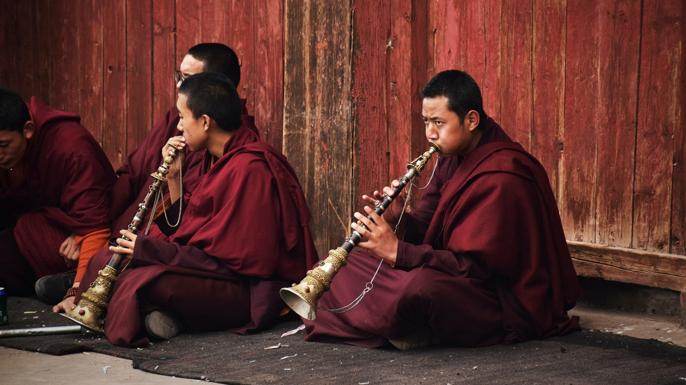
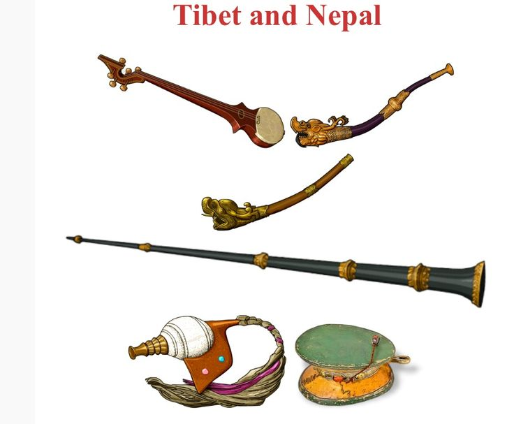

☰
Home
SignIn
Tutor
Community
Contact
About
Music
藏族音樂大體上可以分為佛教音樂，宮廷音樂和民間歌舞音樂以及藏族的戲劇組成。

佛教音樂
《最著名的是羌姆，喇嘛念誦的，把經文當作歌詞的加了鼓和鑔， 骨號和銅青伴奏的曲調。樂器如:加林的不斷氣吹奏法和超吹的銅青， 也不愧為西藏特色。

樂器
藏族傳統樂器有：扎木聶、揚琴、牛角胡、貼琴、根卡、胡琴、熱瑪琴、 豎笛、布巴、骨笛、嗩吶、銅笛、海螺、口弦、竹笛、嘉令、泥笛、大鼓、 熱巴鼓、達瑪鼓、巴郎鼓、鑼、鑔、串鈴。
藏語民歌
藏族民歌主要包括有「魯」，「諧」，「再柔」音樂高亢嘹亮， 聽起來就有高原藍天遼闊的氣象，曲調悠揚，是以五聲為主音樂。 它們囊括了所有人間宗教、喜怒哀樂、悲歡離合、勞動愛情題材。 大可不必按西洋傳統的分類原則分類。